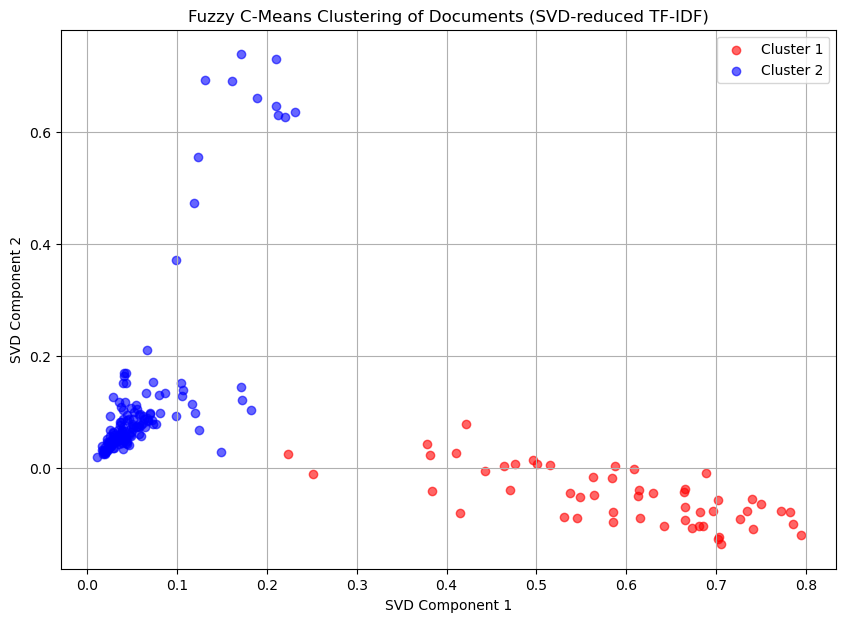
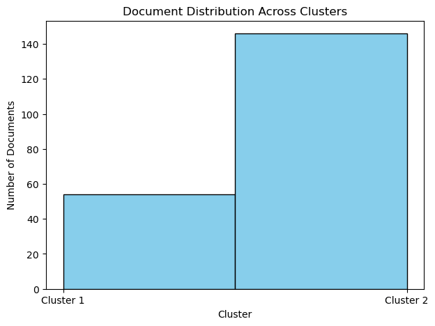

Clustering Berita#
import pandas as pd
import numpy as np
import re
import string
import pickle
from nltk.tokenize import word_tokenize
from nltk.corpus import stopwords
from Sastrawi.Stemmer.StemmerFactory import StemmerFactory
from sklearn.feature_extraction.text import TfidfVectorizer
from sklearn.metrics.pairwise import cosine_similarity
from sklearn.decomposition import TruncatedSVD
from fcmeans import FCM
from sklearn.preprocessing import LabelEncoder
from sklearn.model_selection import train_test_split
from sklearn.metrics import accuracy_score
import nltk
import matplotlib.pyplot as plt
---------------------------------------------------------------------------
ModuleNotFoundError Traceback (most recent call last)
<ipython-input-1-33c906567edb> in <cell line: 8>()
6 from nltk.tokenize import word_tokenize
7 from nltk.corpus import stopwords
----> 8 from Sastrawi.Stemmer.StemmerFactory import StemmerFactory
9 from sklearn.feature_extraction.text import TfidfVectorizer
10 from sklearn.metrics.pairwise import cosine_similarity
ModuleNotFoundError: No module named 'Sastrawi'
---------------------------------------------------------------------------
NOTE: If your import is failing due to a missing package, you can
manually install dependencies using either !pip or !apt.
To view examples of installing some common dependencies, click the
"Open Examples" button below.
---------------------------------------------------------------------------
nltk.download('stopwords')
nltk.download('punkt')
[nltk_data] Downloading package stopwords to
[nltk_data] C:\Users\dohan\AppData\Roaming\nltk_data...
[nltk_data] Package stopwords is already up-to-date!
[nltk_data] Downloading package punkt to
[nltk_data] C:\Users\dohan\AppData\Roaming\nltk_data...
[nltk_data] Package punkt is already up-to-date!
True
data = pd.read_csv('berita_kompas_sample.csv')
data
| No | Judul Berita | Isi Berita | Tanggal Berita | Kategori Berita | |
|---|---|---|---|---|---|
| 0 | 1 | Banyak Serangga Keluar dari Tempat Pengembalia... | DETROIT, KOMPAS.com - Sebuah perpustakaan di p... | 25/09/2024 | global |
| 1 | 2 | Benarkah Petir Bisa Menyambar Lebih dari Sekal... | KOMPAS.com - Unggahan di media sosial menyebut... | 25/09/2024 | tren |
| 2 | 3 | Studi: Dampak Jangka Panjang Covid-19 pada Ota... | KOMPAS.com - Penelitian baru mengungkapkan, or... | 25/09/2024 | tren |
| 3 | 4 | Bukan Sunita Williams, Ini 2 Astronot yang Tin... | KOMPAS.com - Dua astronot Badan Penerbangan da... | 25/09/2024 | tren |
| 4 | 5 | Balas Serangan Israel, Hizbullah Klaim Tembakk... | KOMPAS.com - Kelompok Hizbullah mengeklaim ber... | 25/09/2024 | tren |
| ... | ... | ... | ... | ... | ... |
| 195 | 196 | Angkatan Laut AS Minta Maaf atas Penghancuran ... | WASHINGTON DC, KOMPAS.com - Dalam sebuah upaca... | 22/09/2024 | global |
| 196 | 197 | Polisi Malaysia Tangkap 355 Orang terkait Kasu... | KUALA LUMPUR, KOMPAS.com - Polisi Malaysia men... | 22/09/2024 | global |
| 197 | 198 | Rangkuman Hari Ke-941 Serangan Rusia ke Ukrain... | KYIV, KOMPAS.com - Masih ada beberapa hal baru... | 22/09/2024 | global |
| 198 | 199 | Bujuk Rayu Zelensky pada Biden Jelang Berakhir... | KYIV, KOMPAS.com - Volodymyr Zelensky mendesak... | 22/09/2024 | global |
| 199 | 200 | Pasukan Israel Geruduk Kantor Media Al Jazeera... | TEPI BARAT, KOMPAS.com - Stasiun televisi yan... | 22/09/2024 | global |
200 rows × 5 columns
# Text Preprocessing Functions
def casefolding(text):
return text.lower()
def cleansing(text):
text = text.strip()
text = re.sub(f"[{string.punctuation}]", '', text)
text = re.sub(r'\d+', '', text)
text = re.sub(r"\b[a-zA-Z]\b", "", text)
text = re.sub(r'[^\x00-\x7F]+', '', text)
text = re.sub(r'\s+', ' ', text)
return text
def word_tokenize_wrapper(text):
return word_tokenize(text)
stop_words = set(stopwords.words('indonesian'))
def remove_stopwords(tokens):
return [word for word in tokens if word not in stop_words]
# Stemming with Sastrawi
factory = StemmerFactory()
stemmer = factory.create_stemmer()
def stem_text(tokens):
return [stemmer.stem(word) for word in tokens]
data['Cleansing'] = data['Isi Berita'].apply(casefolding).apply(cleansing)
data['tokenized_text'] = data['Cleansing'].apply(word_tokenize_wrapper)
data['no_stopwords_text'] = data['tokenized_text'].apply(remove_stopwords)
data['stemmed_text'] = data['no_stopwords_text'].apply(stem_text)
data['final_text'] = data['stemmed_text'].apply(lambda x: ' '.join(x))
# Menampilkan beberapa baris pertama dari setiap kolom yang telah dihasilkan
data[['Isi Berita', 'Cleansing', 'tokenized_text', 'no_stopwords_text', 'stemmed_text', 'final_text']].head()
| Isi Berita | Cleansing | tokenized_text | no_stopwords_text | stemmed_text | final_text | |
|---|---|---|---|---|---|---|
| 0 | DETROIT, KOMPAS.com - Sebuah perpustakaan di p... | detroit kompascom sebuah perpustakaan di pingg... | [detroit, kompascom, sebuah, perpustakaan, di,... | [detroit, kompascom, perpustakaan, pinggiran, ... | [detroit, kompascom, pustaka, pinggir, kota, d... | detroit kompascom pustaka pinggir kota detroit... |
| 1 | KOMPAS.com - Unggahan di media sosial menyebut... | kompascom unggahan di media sosial menyebut pe... | [kompascom, unggahan, di, media, sosial, menye... | [kompascom, unggahan, media, sosial, menyebut,... | [kompascom, unggah, media, sosial, sebut, peti... | kompascom unggah media sosial sebut petir samb... |
| 2 | KOMPAS.com - Penelitian baru mengungkapkan, or... | kompascompenelitian baru mengungkapkan orang y... | [kompascompenelitian, baru, mengungkapkan, ora... | [kompascompenelitian, orang, dirawat, rumah, s... | [kompascompenelitian, orang, rawat, rumah, sak... | kompascompenelitian orang rawat rumah sakit in... |
| 3 | KOMPAS.com - Dua astronot Badan Penerbangan da... | kompascom dua astronot badan penerbangan dan a... | [kompascom, dua, astronot, badan, penerbangan,... | [kompascom, astronot, badan, penerbangan, anta... | [kompascom, astronot, badan, terbang, antariks... | kompascom astronot badan terbang antariksa ame... |
| 4 | KOMPAS.com - Kelompok Hizbullah mengeklaim ber... | kompascom kelompok hizbullah mengeklaim berhas... | [kompascom, kelompok, hizbullah, mengeklaim, b... | [kompascom, kelompok, hizbullah, mengeklaim, b... | [kompascom, kelompok, hizbullah, klaim, hasil,... | kompascom kelompok hizbullah klaim hasil seran... |
# Menghapus kolom kategori langsung dari DataFrame asli
data.drop(columns=['Kategori Berita'], inplace=True)
data.head()
| No | Judul Berita | Isi Berita | Tanggal Berita | Cleansing | tokenized_text | no_stopwords_text | stemmed_text | final_text | |
|---|---|---|---|---|---|---|---|---|---|
| 0 | 1 | Banyak Serangga Keluar dari Tempat Pengembalia... | DETROIT, KOMPAS.com - Sebuah perpustakaan di p... | 25/09/2024 | detroit kompascom sebuah perpustakaan di pingg... | [detroit, kompascom, sebuah, perpustakaan, di,... | [detroit, kompascom, perpustakaan, pinggiran, ... | [detroit, kompascom, pustaka, pinggir, kota, d... | detroit kompascom pustaka pinggir kota detroit... |
| 1 | 2 | Benarkah Petir Bisa Menyambar Lebih dari Sekal... | KOMPAS.com - Unggahan di media sosial menyebut... | 25/09/2024 | kompascom unggahan di media sosial menyebut pe... | [kompascom, unggahan, di, media, sosial, menye... | [kompascom, unggahan, media, sosial, menyebut,... | [kompascom, unggah, media, sosial, sebut, peti... | kompascom unggah media sosial sebut petir samb... |
| 2 | 3 | Studi: Dampak Jangka Panjang Covid-19 pada Ota... | KOMPAS.com - Penelitian baru mengungkapkan, or... | 25/09/2024 | kompascompenelitian baru mengungkapkan orang y... | [kompascompenelitian, baru, mengungkapkan, ora... | [kompascompenelitian, orang, dirawat, rumah, s... | [kompascompenelitian, orang, rawat, rumah, sak... | kompascompenelitian orang rawat rumah sakit in... |
| 3 | 4 | Bukan Sunita Williams, Ini 2 Astronot yang Tin... | KOMPAS.com - Dua astronot Badan Penerbangan da... | 25/09/2024 | kompascom dua astronot badan penerbangan dan a... | [kompascom, dua, astronot, badan, penerbangan,... | [kompascom, astronot, badan, penerbangan, anta... | [kompascom, astronot, badan, terbang, antariks... | kompascom astronot badan terbang antariksa ame... |
| 4 | 5 | Balas Serangan Israel, Hizbullah Klaim Tembakk... | KOMPAS.com - Kelompok Hizbullah mengeklaim ber... | 25/09/2024 | kompascom kelompok hizbullah mengeklaim berhas... | [kompascom, kelompok, hizbullah, mengeklaim, b... | [kompascom, kelompok, hizbullah, mengeklaim, b... | [kompascom, kelompok, hizbullah, klaim, hasil,... | kompascom kelompok hizbullah klaim hasil seran... |
from collections import Counter
# Fungsi untuk menghitung frekuensi kata dalam teks
def freq_term_func(text):
tokens = text.split() # Memisahkan teks menjadi token (misalnya, berdasarkan spasi)
return Counter(tokens) # Mengembalikan frekuensi setiap token dalam bentuk Counter
# Menghitung frekuensi token untuk setiap entri dalam kolom 'final_text'
data['freq_term_'] = data['final_text'].apply(freq_term_func)
# Menampilkan 10 hasil teratas dari frekuensi token
print('Frekuensi token : \n')
print(data['freq_term_'].head(10).apply(lambda x: x.most_common()))
Frekuensi token :
0 [(kembali, 5), (serangga, 5), (pustaka, 4), (d...
1 [(petir, 14), (sambar, 14), (titik, 6), (kali,...
2 [(covid, 13), (rawat, 7), (otak, 7), (kognitif...
3 [(astronot, 9), (iss, 7), (angkasa, 6), (tingg...
4 [(israel, 14), (lebanon, 11), (serang, 10), (h...
5 [(daging, 26), (meltique, 9), (marbling, 8), (...
6 [(thailand, 9), (nikah, 7), (jenis, 6), (undan...
7 [(kereta, 15), (lintas, 11), (api, 9), (palang...
8 [(orang, 8), (israel, 7), (lebanon, 7), (seran...
9 [(oxford, 8), (aztec, 7), (universitas, 6), (t...
Name: freq_term_, dtype: object
data.to_csv("data_berita_telah_di_preprocessing.csv")
data = pd.read_csv('berita_kompas_sample.csv')
data
| No | Judul Berita | Isi Berita | Tanggal Berita | Kategori Berita | |
|---|---|---|---|---|---|
| 0 | 1 | Banyak Serangga Keluar dari Tempat Pengembalia... | DETROIT, KOMPAS.com - Sebuah perpustakaan di p... | 25/09/2024 | global |
| 1 | 2 | Benarkah Petir Bisa Menyambar Lebih dari Sekal... | KOMPAS.com - Unggahan di media sosial menyebut... | 25/09/2024 | tren |
| 2 | 3 | Studi: Dampak Jangka Panjang Covid-19 pada Ota... | KOMPAS.com - Penelitian baru mengungkapkan, or... | 25/09/2024 | tren |
| 3 | 4 | Bukan Sunita Williams, Ini 2 Astronot yang Tin... | KOMPAS.com - Dua astronot Badan Penerbangan da... | 25/09/2024 | tren |
| 4 | 5 | Balas Serangan Israel, Hizbullah Klaim Tembakk... | KOMPAS.com - Kelompok Hizbullah mengeklaim ber... | 25/09/2024 | tren |
| ... | ... | ... | ... | ... | ... |
| 195 | 196 | Angkatan Laut AS Minta Maaf atas Penghancuran ... | WASHINGTON DC, KOMPAS.com - Dalam sebuah upaca... | 22/09/2024 | global |
| 196 | 197 | Polisi Malaysia Tangkap 355 Orang terkait Kasu... | KUALA LUMPUR, KOMPAS.com - Polisi Malaysia men... | 22/09/2024 | global |
| 197 | 198 | Rangkuman Hari Ke-941 Serangan Rusia ke Ukrain... | KYIV, KOMPAS.com - Masih ada beberapa hal baru... | 22/09/2024 | global |
| 198 | 199 | Bujuk Rayu Zelensky pada Biden Jelang Berakhir... | KYIV, KOMPAS.com - Volodymyr Zelensky mendesak... | 22/09/2024 | global |
| 199 | 200 | Pasukan Israel Geruduk Kantor Media Al Jazeera... | TEPI BARAT, KOMPAS.com - Stasiun televisi yan... | 22/09/2024 | global |
200 rows × 5 columns
data_prep = pd.read_csv("data_berita_telah_di_preprocessing.csv", usecols = ["final_text"])
data_prep.head(20)
| final_text | |
|---|---|
| 0 | detroit kompascom pustaka pinggir kota detroit... |
| 1 | kompascom unggah media sosial sebut petir samb... |
| 2 | kompascompenelitian orang rawat rumah sakit in... |
| 3 | kompascom astronot badan terbang antariksa ame... |
| 4 | kompascom kelompok hizbullah klaim hasil seran... |
| 5 | kompascom unggah isi cerita warganet beli stea... |
| 6 | bangkok kompascom raja thailand maha vajiralon... |
| 7 | kompascom kendara kerap terobos palang lintas ... |
| 8 | beirut kompascom korban tewas akibat serang ud... |
| 9 | kompascom ajar oxford universitas oxford kemba... |
| 10 | kompascom inggris warga lebanon tinggal negara... |
| 11 | kompascom masyarakat ubah status tanah hak ban... |
| 12 | kompascom lini media sosial ramai unggah video... |
| 13 | kompascom nasa barubaru temu tarik muka mars r... |
| 14 | tulis voa indonesia singapura kompascom mantan... |
| 15 | kompascom video rekam pria tegur tugas ambulan... |
| 16 | kompascom kelompok monyet hasil selamat anak p... |
| 17 | kompascom ilmuwan kelompok darah manusia dunia... |
| 18 | kompascom kampanye pilih kepala daerah pilkada... |
| 19 | kompascom albert einstein salah pikir besar ab... |
tfidf_vectorizer = TfidfVectorizer()
# Calculate TF-IDF matrix
tfidf_matrix = tfidf_vectorizer.fit_transform(data_prep['final_text'])
# Convert TF-IDF matrix to DataFrame for better readability
tfidf_df = pd.DataFrame(tfidf_matrix.toarray(), columns=tfidf_vectorizer.get_feature_names_out())
# Display the first few rows of the TF-IDF table
tfidf_df.head()
| ab | abad | abadi | abah | abai | abba | abbas | abbasiyah | abc | abdallah | ... | zelzal | ziad | zimbabwe | zionis | zionisme | zoe | zom | zona | zoologi | zullies | |
|---|---|---|---|---|---|---|---|---|---|---|---|---|---|---|---|---|---|---|---|---|---|
| 0 | 0.0 | 0.0 | 0.0 | 0.0 | 0.0 | 0.0 | 0.0 | 0.0 | 0.000000 | 0.0 | ... | 0.0 | 0.0 | 0.0 | 0.0 | 0.0 | 0.0 | 0.0 | 0.0 | 0.0 | 0.0 |
| 1 | 0.0 | 0.0 | 0.0 | 0.0 | 0.0 | 0.0 | 0.0 | 0.0 | 0.000000 | 0.0 | ... | 0.0 | 0.0 | 0.0 | 0.0 | 0.0 | 0.0 | 0.0 | 0.0 | 0.0 | 0.0 |
| 2 | 0.0 | 0.0 | 0.0 | 0.0 | 0.0 | 0.0 | 0.0 | 0.0 | 0.000000 | 0.0 | ... | 0.0 | 0.0 | 0.0 | 0.0 | 0.0 | 0.0 | 0.0 | 0.0 | 0.0 | 0.0 |
| 3 | 0.0 | 0.0 | 0.0 | 0.0 | 0.0 | 0.0 | 0.0 | 0.0 | 0.048416 | 0.0 | ... | 0.0 | 0.0 | 0.0 | 0.0 | 0.0 | 0.0 | 0.0 | 0.0 | 0.0 | 0.0 |
| 4 | 0.0 | 0.0 | 0.0 | 0.0 | 0.0 | 0.0 | 0.0 | 0.0 | 0.000000 | 0.0 | ... | 0.0 | 0.0 | 0.0 | 0.0 | 0.0 | 0.0 | 0.0 | 0.0 | 0.0 | 0.0 |
5 rows × 5723 columns
tfidf_array = tfidf_matrix.toarray()
with open("tfidf_vectorizer_cluster.pkl", "wb") as f:
pickle.dump(tfidf_vectorizer, f)
print("TF-IDF Vectorizer telah disimpan ke tfidf_vectorizer.pkl")
TF-IDF Vectorizer telah disimpan ke tfidf_vectorizer.pkl
from sklearn.feature_extraction.text import TfidfVectorizer
fcm = FCM(n_clusters=2)
fcm.fit(tfidf_array)
# Get fuzzy membership probabilities and hard labels for each document
fuzzy_membership = fcm.u
hard_labels = fcm.predict(tfidf_array)
# Step 3: Convert results to DataFrame
cluster_results = pd.DataFrame({
"Document": data_prep.index,
"Cluster": hard_labels,
"Membership_Cluster_1": fuzzy_membership[:, 0],
"Membership_Cluster_2": fuzzy_membership[:, 1]
})
# Display clustering results
print(cluster_results.head())
Document Cluster Membership_Cluster_1 Membership_Cluster_2
0 0 1 0.5 0.5
1 1 1 0.5 0.5
2 2 1 0.5 0.5
3 3 1 0.5 0.5
4 4 0 0.5 0.5
import matplotlib.pyplot as plt
from sklearn.decomposition import TruncatedSVD
# Step 1: Reduce dimensions of TF-IDF data to 2D using SVD
svd = TruncatedSVD(n_components=2, random_state=42)
tfidf_2d = svd.fit_transform(tfidf_array)
# Step 2: Plotting the clusters
plt.figure(figsize=(10, 7))
# Assign colors based on cluster labels
colors = ['red', 'blue']
for cluster in range(2):
plt.scatter(
tfidf_2d[hard_labels == cluster, 0],
tfidf_2d[hard_labels == cluster, 1],
color=colors[cluster],
label=f'Cluster {cluster + 1}',
alpha=0.6
)
# Step 3: Label and show plot
plt.title("Fuzzy C-Means Clustering of Documents (SVD-reduced TF-IDF)")
plt.xlabel("SVD Component 1")
plt.ylabel("SVD Component 2")
plt.legend()
plt.grid(True)
plt.show()

from sklearn.metrics import silhouette_score
# Calculate Silhouette Score using the TF-IDF array and hard cluster labels
silhouette_avg = silhouette_score(tfidf_array, hard_labels)
# Display the Silhouette Score
print(f"Silhouette Score for Fuzzy C-Means Clustering: {silhouette_avg:.4f}")
Silhouette Score for Fuzzy C-Means Clustering: 0.0484
import numpy as np
# Mendapatkan indeks dokumen untuk setiap kluster
cluster_0_docs = np.where(hard_labels == 0)[0]
cluster_1_docs = np.where(hard_labels == 1)[0]
# Menghitung rata-rata TF-IDF untuk setiap kata di setiap kluster
tfidf_cluster_0 = tfidf_matrix[cluster_0_docs].mean(axis=0).A1
tfidf_cluster_1 = tfidf_matrix[cluster_1_docs].mean(axis=0).A1
# Mendapatkan fitur kata
terms = tfidf_vectorizer.get_feature_names_out()
# Mengambil 10 term teratas untuk masing-masing kluster
top_terms_cluster_0 = [terms[i] for i in tfidf_cluster_0.argsort()[-10:][::-1]]
top_terms_cluster_1 = [terms[i] for i in tfidf_cluster_1.argsort()[-10:][::-1]]
print("Top terms in Cluster 0:", top_terms_cluster_0)
print("Top terms in Cluster 1:", top_terms_cluster_1)
Top terms in Cluster 0: ['israel', 'lebanon', 'hizbullah', 'serang', 'militer', 'tewas', 'gaza', 'perang', 'orang', 'warga']
Top terms in Cluster 1: ['ukraina', 'rusia', 'presiden', 'baca', 'orang', 'indonesia', 'temu', 'negara', 'hujan', 'zelensky']
# Visualisasi distribusi dokumen dalam setiap kluster
plt.figure(figsize=(7, 5))
plt.hist(hard_labels, bins=2, color='skyblue', edgecolor='black') # Gunakan satu warna saja
plt.title("Document Distribution Across Clusters")
plt.xlabel("Cluster")
plt.ylabel("Number of Documents")
plt.xticks([0, 1], ['Cluster 1', 'Cluster 2'])
plt.show()

import pickle
import pandas as pd
# Simpan model FCM menggunakan pickle
with open("fcm_model_new.pkl", "wb") as file:
pickle.dump(fcm, file)
# Simpan hasil clustering ke file CSV
cluster_results.to_csv("cluster_results.csv", index=False)
Link Deployment Aplikasi Clustering Berita :